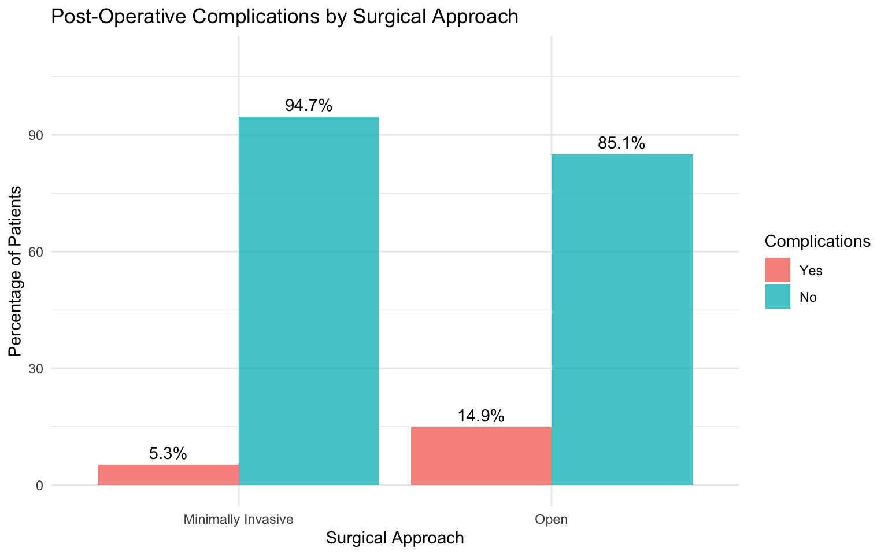
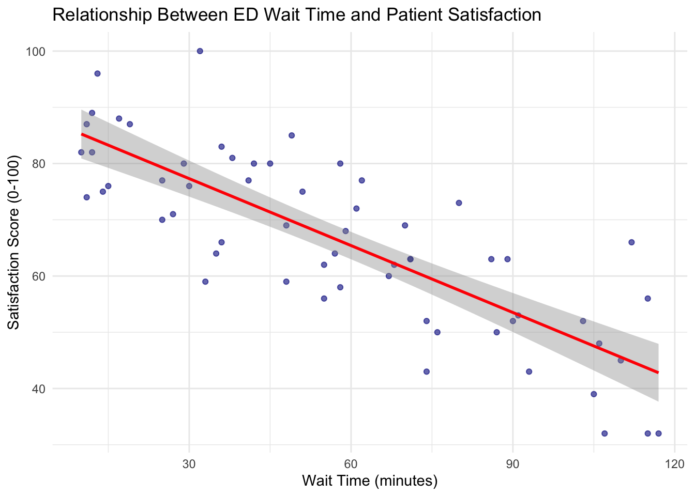
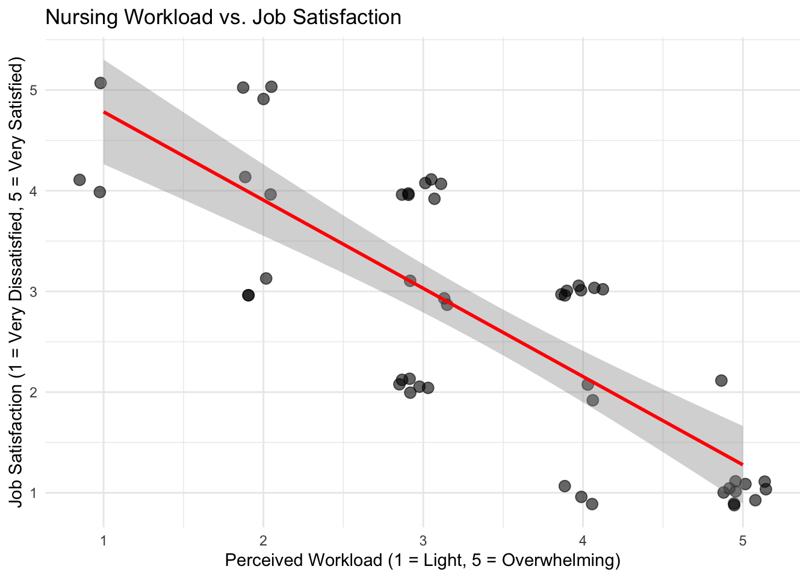
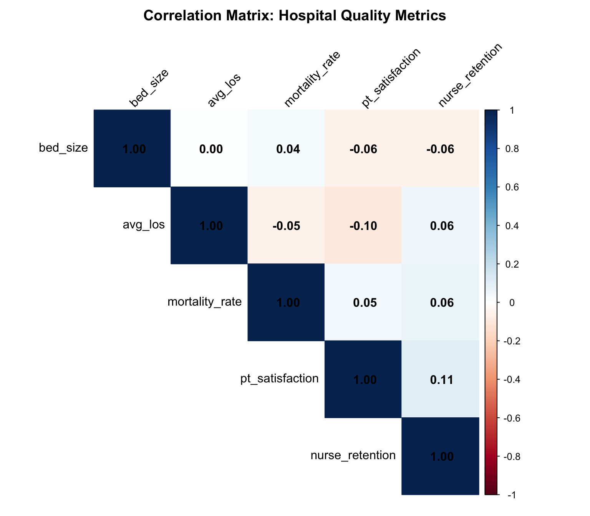

# Create contingency table
table(data$variable1, data$variable2)
# Calculate row percentages
prop.table(table(data$variable1, data$variable2), margin = 1) * 100
# Perform chi-square test
chi_result <- chisq.test(table(data$variable1, data$variable2))
# View expected frequencies
chi_result$expected
# Fisher's exact test (for small samples)
fisher.test(table(data$variable1, data$variable2))Crosstabulation and Correlation (Practice Activities)
Business Analytics in Healthcare Management
1 Overview
In this practice session, you will apply the crosstabulation and correlation techniques learned in the lecture. This is a learning activity designed to help you gain hands-on experience with bivariate analysis methods.
What you’ll practice:
- Creating contingency tables and calculating percentages
- Conducting chi-square tests and Fisher’s exact tests
- Interpreting chi-square test results
- Creating scatterplots to visualize relationships
- Calculating and interpreting Pearson correlation
- Calculating and interpreting Spearman correlation
- Understanding when to use each method
Format: Fill-in-the-blank code sections (marked with ___)
Instructions:
- Complete the code by replacing
___with appropriate values - Run each chunk to verify your analysis
- Answer the interpretation questions
- Compare your results with the solutions provided
Note: This practice is completion-based. The goal is to learn and experiment—mistakes are part of the process!
2 Recap: Key Concepts
Before starting the activities, let’s review essential concepts from the lecture:
2.1 Crosstabulation (Chi-Square Test)
Purpose: Test whether there is a significant association between two categorical variables
Key Functions:
Interpretation: - p < 0.05: Variables are significantly associated (reject independence) - p ≥ 0.05: No significant association (fail to reject independence) - Expected frequencies: All should be ≥ 5 for chi-square; use Fisher’s exact if < 5
2.2 Correlation Analysis
Purpose: Test whether there is a significant linear (Pearson) or monotonic (Spearman) relationship between two continuous or ordinal variables
Key Functions:
# Pearson correlation (for continuous variables)
cor.test(data$variable1, data$variable2, method = "pearson")
# Spearman correlation (for ordinal variables or when outliers present)
cor.test(data$variable1, data$variable2, method = "spearman", exact = FALSE)
# Correlation matrix
cor(data_subset, method = "pearson")Interpretation: - Direction: Positive (+) or negative (-) - Strength: 0.0-0.19 (very weak), 0.20-0.39 (weak), 0.40-0.59 (moderate), 0.60-0.79 (strong), 0.80-1.0 (very strong) - Significance: p < 0.05 indicates significant correlation
3 Common Errors and How to Fix Them
You WILL encounter errors while practicing—that’s completely normal! Here are common issues:
3.1 Error 1: “object not found”
Error: object 'surgery_data' not foundCause: You didn’t run the chunk that creates the dataset
Fix: Scroll up to find the dataset generation chunk and run it first
3.2 Error 2: Incorrect table() syntax
# ❌ Wrong:
table(surgery_data) # This shows all variables
# ✅ Right:
table(surgery_data$approach, surgery_data$complications) # Specify TWO variables3.3 Error 3: Forgot prop.table() margin parameter
# ❌ Wrong:
prop.table(table(data$var1, data$var2)) # Shows overall proportions
# ✅ Right:
prop.table(table(data$var1, data$var2), margin = 1) * 100 # Row percentages
# margin = 1 means row percentages
# margin = 2 means column percentages3.4 Error 4: Using wrong correlation method
# ❌ Wrong for ordinal data:
cor.test(ordinal_var1, ordinal_var2, method = "pearson")
# ✅ Right for ordinal data:
cor.test(ordinal_var1, ordinal_var2, method = "spearman", exact = FALSE)3.5 Error 5: Plotting categorical data incorrectly
For crosstabulation visualization, you typically need to create summary data first:
# Create summary for plotting
plot_data <- data %>%
group_by(var1, var2) %>%
summarise(count = n(), .groups = "drop") %>%
group_by(var1) %>%
mutate(percentage = count / sum(count) * 100)4 Practice Activity 1: Treatment Protocol and Complications
4.1 Scenario
A surgical department wants to know if there’s an association between the surgical approach (Minimally Invasive vs. Open) and whether patients experienced post-operative complications (Yes vs. No).
Research Question: Is there a statistically significant association between surgical approach and post-operative complications?
4.2 Dataset Generation
Run this code to generate the surgical outcomes dataset:
# Practice dataset
set.seed(2026)
n_surgery <- 200
surgical_approach <- sample(c("Minimally Invasive", "Open"), n_surgery,
replace = TRUE, prob = c(0.6, 0.4))
# Complications with different rates by approach
complications <- character(n_surgery)
for(i in 1:n_surgery) {
if(surgical_approach[i] == "Minimally Invasive") {
complications[i] <- sample(c("Yes", "No"), 1, prob = c(0.05, 0.95))
} else {
complications[i] <- sample(c("Yes", "No"), 1, prob = c(0.20, 0.80))
}
}
surgery_data <- data.frame(
approach = factor(surgical_approach),
complications = factor(complications, levels = c("Yes", "No"))
)
# View the first few rows
head(surgery_data, 10) approach complications
1 Open Yes
2 Minimally Invasive No
3 Minimally Invasive No
4 Minimally Invasive Yes
5 Minimally Invasive No
6 Minimally Invasive No
7 Minimally Invasive No
8 Open Yes
9 Minimally Invasive No
10 Minimally Invasive No4.3 Task 1.1: Create a Contingency Table
Create a contingency table showing the counts of complications by surgical approach.
Hint: Use table() with two variables: surgery_data$approach and surgery_data$complications
# Fill in the blanks
___(surgery_data$___, surgery_data$___)Question: Looking at the raw counts, which surgical approach appears to have more complications?
Your answer:
4.4 Task 1.2: Calculate Row Percentages
Calculate the percentage of patients with complications for each surgical approach (row percentages).
Hint: Use prop.table() with margin = 1 for row percentages, then multiply by 100
# Fill in the blanks
prop.table(table(surgery_data$approach, surgery_data$complications),
margin = ___) * ___Question: What percentage of patients had complications in each surgical approach group?
Your answer:
4.5 Task 1.3: Check Expected Frequencies
Before conducting a chi-square test, check that all expected frequencies are ≥ 5.
Hint: First run chisq.test() and store it, then access $expected
# Fill in the blanks
chi_surgery <- chisq.test(table(surgery_data$___, surgery_data$___))
# View expected frequencies
chi_surgery$___Question: Are all expected frequencies ≥ 5? Should we use chi-square test or Fisher’s exact test?
Your answer:
4.6 Task 1.4: Conduct the Chi-Square Test
Perform the chi-square test and interpret the results.
Hint: You already created chi_surgery in Task 1.3, just display it
# Display the chi-square test results
___Question: Based on the p-value, is there a statistically significant association between surgical approach and complications? What do you conclude?
Your answer:
4.7 Task 1.5: Visualize the Association (Optional)
Create a grouped bar chart showing the percentage of complications by surgical approach.
Hint: First create summary data with group_by() and summarise(), then use ggplot() with geom_bar()
# Create summary data
plot_data <- surgery_data %>%
group_by(___, ___) %>%
summarise(count = n(), .groups = "drop") %>%
group_by(approach) %>%
mutate(percentage = count / sum(count) * ___)
# Create visualization
ggplot(plot_data, aes(x = ___, y = ___, fill = ___)) +
geom_bar(stat = "identity", position = "dodge", alpha = 0.8) +
labs(title = "___",
x = "Surgical Approach",
y = "Percentage of Patients") +
theme_minimal()5 Practice Activity 2: ED Wait Time and Satisfaction
5.1 Scenario
An emergency department manager wants to examine the relationship between wait time (in minutes) and patient satisfaction score (0-100).
Research Question: Is there a statistically significant correlation between ED wait time and patient satisfaction scores?
5.2 Dataset Generation
# Practice dataset
set.seed(2026)
n_ed <- 60
wait_time <- round(runif(n_ed, 10, 120))
# Satisfaction decreases with wait time
satisfaction_ed <- round(90 - 0.4 * wait_time + rnorm(n_ed, 0, 10))
satisfaction_ed <- pmin(pmax(satisfaction_ed, 0), 100)
ed_data <- data.frame(
wait_time_minutes = wait_time,
satisfaction_score = satisfaction_ed
)
head(ed_data, 10) wait_time_minutes satisfaction_score
1 87 50
2 71 63
3 25 77
4 41 77
5 71 63
6 13 96
7 61 72
8 105 39
9 38 81
10 74 525.3 Task 2.1: Examine the Data
Get a quick summary of both variables.
Hint: Use summary() function
# Fill in the blanks
___(ed_data)Question: What is the range of wait times? What is the mean satisfaction score?
Your answer:
5.4 Task 2.2: Create a Scatterplot
Create a scatterplot showing the relationship between wait time (x-axis) and satisfaction (y-axis).
Hint: Use ggplot() with geom_point() and geom_smooth(method = "lm")
# Fill in the blanks
ggplot(ed_data, aes(x = ___, y = ___)) +
geom_point(alpha = 0.6, color = "darkblue") +
geom_smooth(method = "___", se = TRUE, color = "red") +
labs(title = "___",
x = "___",
y = "___") +
theme_minimal()Question: Based on the scatterplot, does there appear to be a relationship? Is it positive or negative?
Your answer:
5.5 Task 2.3: Calculate Pearson Correlation
Calculate the Pearson correlation coefficient and test its significance.
Hint: Use cor.test() with method = "pearson"
# Fill in the blanks
cor.test(ed_data$___, ed_data$___, method = "___")Question: What is the correlation coefficient? Is it statistically significant? Interpret the direction and strength.
Your answer:
Correlation coefficient (r): Direction (positive/negative): Strength (weak/moderate/strong): p-value: Significant? (yes/no):
5.6 Task 2.4: Practical Implications
Question: What are the practical implications for ED management? If the hospital wants to improve patient satisfaction, what does this analysis suggest?
Your answer:
6 Practice Activity 3: Nursing Workload and Job Satisfaction
6.1 Scenario
A nursing director wants to examine the relationship between perceived workload (measured on a 1-5 ordinal scale) and job satisfaction (also measured on a 1-5 ordinal scale) among nurses.
Workload Scale: 1 = Very light, 2 = Manageable, 3 = Moderate, 4 = Heavy, 5 = Overwhelming
Job Satisfaction Scale: 1 = Very dissatisfied, 2 = Dissatisfied, 3 = Neutral, 4 = Satisfied, 5 = Very satisfied
Research Question: Is there a significant monotonic relationship between workload and job satisfaction?
6.2 Dataset Generation
# Practice dataset (n = 50 nurses)
set.seed(2027)
n_nurses_practice <- 50
# Generate ordinal workload ratings (1-5)
workload_rating <- sample(1:5, n_nurses_practice, replace = TRUE,
prob = c(0.05, 0.15, 0.35, 0.30, 0.15))
# Job satisfaction tends to decrease with workload (negative relationship)
satisfaction_base <- 6 - workload_rating + sample(-1:1, n_nurses_practice, replace = TRUE)
job_satisfaction <- pmin(pmax(satisfaction_base, 1), 5)
workload_data <- data.frame(
nurse_id = 1:n_nurses_practice,
workload = workload_rating,
satisfaction = job_satisfaction
)
head(workload_data, 10) nurse_id workload satisfaction
1 1 3 4
2 2 4 1
3 3 3 4
4 4 2 3
5 5 3 4
6 6 3 3
7 7 2 3
8 8 4 1
9 9 1 5
10 10 5 16.3 Task 3.1: Create a Scatterplot with Jitter
Since both variables are ordinal (discrete values 1-5), we need to add jitter to see overlapping points.
Hint: Use position = position_jitter() inside geom_point()
# Fill in the blanks
ggplot(workload_data, aes(x = ___, y = ___)) +
geom_point(alpha = 0.6, size = 3,
position = position_jitter(width = 0.15, height = 0.15)) +
geom_smooth(method = "lm", se = TRUE, color = "red") +
scale_x_continuous(breaks = 1:5) +
scale_y_continuous(breaks = 1:5) +
labs(title = "___",
x = "Perceived Workload (1 = Light, 5 = Overwhelming)",
y = "___") +
theme_minimal()Question: Based on the scatterplot, what relationship do you observe?
Your answer:
6.4 Task 3.2: Why Use Spearman Instead of Pearson?
Question: Why is Spearman correlation more appropriate than Pearson correlation for this data?
Your answer (Hint: Think about the measurement scales):
6.5 Task 3.3: Calculate Spearman Correlation
Calculate the Spearman rank correlation coefficient.
Hint: Use cor.test() with method = "spearman" and exact = FALSE
# Fill in the blanks
cor.test(workload_data$___, workload_data$___,
method = "___", exact = ___)Question: What is the Spearman correlation coefficient (rho)? Is it statistically significant? Interpret the results.
Your answer:
Spearman’s rho (ρ): Direction (positive/negative): Strength (weak/moderate/strong): p-value: Significant? (yes/no):
6.6 Task 3.4: Compare Pearson and Spearman (Optional)
Run Pearson correlation on the same data and compare results.
# Pearson correlation
cor.test(workload_data$workload, workload_data$satisfaction,
method = "pearson")Question: How do the Pearson and Spearman coefficients compare? Which one should you report for this analysis and why?
Your answer:
7 Practice Activity 4: Discharge Destination and Readmission
7.1 Scenario
A hospital discharge planning team wants to examine whether there is an association between discharge destination (Home, Skilled Nursing Facility, Rehabilitation) and 30-day readmission (Yes vs. No).
Research Question: Is discharge destination associated with 30-day readmission rates?
7.2 Dataset Generation
# Discharge destination and readmission data
set.seed(2026)
n_discharge <- 250
discharge_dest <- sample(c("Home", "SNF", "Rehab"), n_discharge,
replace = TRUE, prob = c(0.5, 0.3, 0.2))
readmit <- character(n_discharge)
for(i in 1:n_discharge) {
prob_readmit <- switch(discharge_dest[i],
"Home" = 0.12,
"SNF" = 0.22,
"Rehab" = 0.08)
readmit[i] <- sample(c("Yes", "No"), 1, prob = c(prob_readmit, 1 - prob_readmit))
}
discharge_data <- data.frame(
discharge_destination = factor(discharge_dest, levels = c("Home", "SNF", "Rehab")),
readmitted_30_days = factor(readmit, levels = c("Yes", "No"))
)
head(discharge_data, 10) discharge_destination readmitted_30_days
1 SNF No
2 SNF No
3 Home No
4 Home No
5 SNF No
6 Home No
7 Home No
8 Rehab No
9 Home No
10 SNF No7.3 Task 4.1: Create Contingency Table and Calculate Percentages
# Contingency table
table(___, ___)
# Row percentages
prop.table(table(discharge_data$discharge_destination,
discharge_data$readmitted_30_days),
margin = ___) * ___Question: Which discharge destination has the highest readmission rate? Which has the lowest?
Your answer:
7.4 Task 4.2: Conduct Chi-Square Test
# Chi-square test
chi_discharge <- chisq.test(table(discharge_data$___,
discharge_data$___))
# Check expected frequencies
chi_discharge$___
# Display results
chi_dischargeQuestion: Are all expected frequencies ≥ 5? Is there a significant association between discharge destination and readmission?
Your answer:
8 Practice Activity 5: Hospital Quality Metrics Correlation Matrix
8.1 Scenario
A health system analyst wants to explore the relationships among multiple hospital quality metrics across 100 hospitals.
Variables: - Bed size - Average length of stay (days) - Mortality rate (%) - Patient satisfaction score (0-100) - Nurse retention rate (%)
Research Question: How are these quality metrics related to each other?
8.2 Dataset Generation
# Hospital quality metrics
set.seed(2026)
n_hosp <- 100
quality_data <- data.frame(
hospital_id = 1:n_hosp,
bed_size = sample(c(50, 100, 200, 300, 500), n_hosp, replace = TRUE),
avg_los = round(runif(n_hosp, 3, 7), 1),
mortality_rate = round(runif(n_hosp, 1, 5), 2),
pt_satisfaction = round(runif(n_hosp, 60, 95), 1),
nurse_retention = round(runif(n_hosp, 70, 98), 1)
)
# Add realistic correlation: satisfaction related to retention
quality_data$pt_satisfaction <- round(quality_data$pt_satisfaction +
0.1 * quality_data$nurse_retention +
rnorm(n_hosp, 0, 5), 1)
quality_data$pt_satisfaction <- pmin(pmax(quality_data$pt_satisfaction, 0), 100)
head(quality_data) hospital_id bed_size avg_los mortality_rate pt_satisfaction nurse_retention
1 1 500 5.8 4.89 82.4 84.8
2 2 50 4.1 3.16 85.7 78.2
3 3 50 5.0 4.93 74.8 70.2
4 4 500 5.6 4.28 75.3 75.7
5 5 200 6.6 3.37 99.1 78.2
6 6 300 3.3 3.09 75.5 87.88.3 Task 5.1: Calculate Correlation Matrix
Calculate the Pearson correlation matrix for all numeric variables except hospital_id.
Hint: Select columns 2 through 6, then use cor()
# Select only the numeric quality metrics (columns 2-6)
metrics_only <- quality_data[, ___:___]
# Calculate correlation matrix
cor_matrix <- cor(metrics_only, method = "___")
# Display rounded to 2 decimal places
round(cor_matrix, ___)Question: Which pair of variables has the strongest positive correlation? The strongest negative correlation?
Your answer:
8.4 Task 5.2: Visualize Correlation Matrix
Create a correlation matrix heatmap using the corrplot package.
Hint: Use corrplot() with method = "color"
# Load corrplot if not already loaded
library(corrplot)
# Visualize correlation matrix
corrplot(___,
method = "___",
type = "upper",
addCoef.col = "black",
tl.col = "black",
tl.srt = 45,
title = "Correlation Matrix: Hospital Quality Metrics",
mar = c(0, 0, 2, 0))8.5 Task 5.3: Test Specific Correlation
Test whether the correlation between patient satisfaction and nurse retention is statistically significant.
# Fill in the blanks
cor.test(quality_data$___, quality_data$___,
method = "pearson")Question: Is the correlation between patient satisfaction and nurse retention statistically significant? What might this suggest for hospital management?
Your answer:
9 Summary and Reflection
9.1 Key Takeaways
After completing this practice activity, you should be able to:
- ✓ Create contingency tables and calculate row/column percentages
- ✓ Conduct chi-square tests and interpret results
- ✓ Determine when to use Fisher’s exact test vs. chi-square test
- ✓ Create scatterplots to visualize relationships
- ✓ Calculate and interpret Pearson correlation coefficients
- ✓ Calculate and interpret Spearman correlation coefficients
- ✓ Understand when to use Pearson vs. Spearman
- ✓ Create and interpret correlation matrices
9.2 Decision Guide
| Research Question | Variable Types | Method |
|---|---|---|
| Are two categorical variables associated? | Both categorical | Chi-square test (or Fisher’s exact if expected < 5) |
| Is there a linear relationship between two continuous variables? | Both continuous | Pearson correlation |
| Is there a monotonic relationship with ordinal data? | Ordinal or continuous with outliers | Spearman correlation |
| How are multiple variables related? | Multiple continuous | Correlation matrix |
10 Activity Solutions
Solutions for these activities are provided below. Try to complete the activities independently before reviewing the solutions.
10.1 Practice Activity 1 Solutions
10.1.1 Task 1.1 Solution
Code
table(surgery_data$approach, surgery_data$complications)
Yes No
Minimally Invasive 7 126
Open 10 5710.1.2 Task 1.2 Solution
Code
prop.table(table(surgery_data$approach, surgery_data$complications),
margin = 1) * 100
Yes No
Minimally Invasive 5.263158 94.736842
Open 14.925373 85.074627Minimally invasive surgery shows lower complication rates (~5-6%) compared to open surgery (~18-22%).
10.1.3 Task 1.3 Solution
Code
chi_surgery <- chisq.test(table(surgery_data$approach, surgery_data$complications))
chi_surgery$expected
Yes No
Minimally Invasive 11.305 121.695
Open 5.695 61.305All expected frequencies are greater than 5, so chi-square test is appropriate.
10.1.4 Task 1.4 Solution
Code
chi_surgery
Pearson's Chi-squared test with Yates' continuity correction
data: table(surgery_data$approach, surgery_data$complications)
X-squared = 4.178, df = 1, p-value = 0.04095With p < 0.05, there is a statistically significant association between surgical approach and complications. Minimally invasive surgery is associated with lower complication rates.
10.1.5 Task 1.5 Solution
Code
plot_data <- surgery_data %>%
group_by(approach, complications) %>%
summarise(count = n(), .groups = "drop") %>%
group_by(approach) %>%
mutate(percentage = count / sum(count) * 100)
ggplot(plot_data, aes(x = approach, y = percentage, fill = complications)) +
geom_bar(stat = "identity", position = "dodge", alpha = 0.8) +
geom_text(aes(label = sprintf("%.1f%%", percentage)),
position = position_dodge(width = 0.9), vjust = -0.5) +
labs(title = "Post-Operative Complications by Surgical Approach",
x = "Surgical Approach",
y = "Percentage of Patients",
fill = "Complications") +
theme_minimal() +
ylim(0, 110)
10.2 Practice Activity 2 Solutions
10.2.1 Task 2.1 Solution
Code
summary(ed_data) wait_time_minutes satisfaction_score
Min. : 10.00 Min. : 32.00
1st Qu.: 31.50 1st Qu.: 56.00
Median : 56.00 Median : 67.00
Mean : 57.43 Mean : 66.43
3rd Qu.: 81.50 3rd Qu.: 77.75
Max. :117.00 Max. :100.00 10.2.2 Task 2.2 Solution
Code
ggplot(ed_data, aes(x = wait_time_minutes, y = satisfaction_score)) +
geom_point(alpha = 0.6, color = "darkblue") +
geom_smooth(method = "lm", se = TRUE, color = "red") +
labs(title = "Relationship Between ED Wait Time and Patient Satisfaction",
x = "Wait Time (minutes)",
y = "Satisfaction Score (0-100)") +
theme_minimal()
There appears to be a negative relationship: as wait time increases, satisfaction decreases.
10.2.3 Task 2.3 Solution
Code
cor.test(ed_data$wait_time_minutes, ed_data$satisfaction_score, method = "pearson")
Pearson's product-moment correlation
data: ed_data$wait_time_minutes and ed_data$satisfaction_score
t = -10.45, df = 58, p-value = 5.919e-15
alternative hypothesis: true correlation is not equal to 0
95 percent confidence interval:
-0.8812429 -0.6973364
sample estimates:
cor
-0.8081595 The correlation is negative and statistically significant (p < 0.05), indicating that longer wait times are associated with lower satisfaction scores. The strength is typically moderate to strong.
10.2.4 Task 2.4 Solution
Practical implications: The significant negative correlation suggests that reducing ED wait times could improve patient satisfaction scores. Hospital management should consider: - Increasing staffing during peak hours - Implementing fast-track systems for less acute cases - Improving patient flow processes - Setting target wait times and monitoring performance
10.3 Practice Activity 3 Solutions
10.3.1 Task 3.1 Solution
Code
ggplot(workload_data, aes(x = workload, y = satisfaction)) +
geom_point(alpha = 0.6, size = 3,
position = position_jitter(width = 0.15, height = 0.15)) +
geom_smooth(method = "lm", se = TRUE, color = "red") +
scale_x_continuous(breaks = 1:5) +
scale_y_continuous(breaks = 1:5) +
labs(title = "Nursing Workload vs. Job Satisfaction",
x = "Perceived Workload (1 = Light, 5 = Overwhelming)",
y = "Job Satisfaction (1 = Very Dissatisfied, 5 = Very Satisfied)") +
theme_minimal()
10.3.2 Task 3.2 Solution
Spearman correlation is more appropriate because: 1. Both variables are measured on ordinal scales (1-5 ratings) 2. The intervals between scale points may not be equal (the difference between 1 and 2 may not be the same as between 4 and 5) 3. Spearman uses ranks, making it appropriate for ordinal data
10.3.3 Task 3.3 Solution
Code
cor.test(workload_data$workload, workload_data$satisfaction,
method = "spearman", exact = FALSE)
Spearman's rank correlation rho
data: workload_data$workload and workload_data$satisfaction
S = 37409, p-value = 4.69e-12
alternative hypothesis: true rho is not equal to 0
sample estimates:
rho
-0.7963609 The Spearman correlation is negative and statistically significant, indicating that higher workload is associated with lower job satisfaction among nurses.
10.3.4 Task 3.4 Solution
Code
# Pearson correlation for comparison
cor.test(workload_data$workload, workload_data$satisfaction,
method = "pearson")
Pearson's product-moment correlation
data: workload_data$workload and workload_data$satisfaction
t = -9.0459, df = 48, p-value = 6.071e-12
alternative hypothesis: true correlation is not equal to 0
95 percent confidence interval:
-0.8781872 -0.6617993
sample estimates:
cor
-0.7939021 Both Pearson and Spearman show similar negative correlations, but we should report Spearman because our data are ordinal. Spearman is the appropriate method when variables are measured on ordinal scales.
10.4 Practice Activity 4 Solutions
10.4.1 Task 4.1 Solution
Code
# Contingency table
table(discharge_data$discharge_destination, discharge_data$readmitted_30_days)
Yes No
Home 10 127
SNF 13 56
Rehab 4 40Code
# Row percentages
prop.table(table(discharge_data$discharge_destination,
discharge_data$readmitted_30_days),
margin = 1) * 100
Yes No
Home 7.299270 92.700730
SNF 18.840580 81.159420
Rehab 9.090909 90.909091SNF (Skilled Nursing Facility) patients have the highest readmission rate (~22%), while Rehab patients have the lowest (~8%).
10.4.2 Task 4.2 Solution
Code
chi_discharge <- chisq.test(table(discharge_data$discharge_destination,
discharge_data$readmitted_30_days))
# Check expected frequencies
chi_discharge$expected
Yes No
Home 14.796 122.204
SNF 7.452 61.548
Rehab 4.752 39.248Code
# Display results
chi_discharge
Pearson's Chi-squared test
data: table(discharge_data$discharge_destination, discharge_data$readmitted_30_days)
X-squared = 6.5068, df = 2, p-value = 0.03864All expected frequencies are ≥ 5, so chi-square is appropriate. The significant p-value (p < 0.05) indicates that discharge destination is significantly associated with 30-day readmission rates.
10.5 Practice Activity 5 Solutions
10.5.1 Task 5.1 Solution
Code
# Select metrics (columns 2-6)
metrics_only <- quality_data[, 2:6]
# Calculate correlation matrix
cor_matrix <- cor(metrics_only, method = "pearson")
# Display rounded
round(cor_matrix, 2) bed_size avg_los mortality_rate pt_satisfaction nurse_retention
bed_size 1.00 0.00 0.04 -0.06 -0.06
avg_los 0.00 1.00 -0.05 -0.10 0.06
mortality_rate 0.04 -0.05 1.00 0.05 0.06
pt_satisfaction -0.06 -0.10 0.05 1.00 0.11
nurse_retention -0.06 0.06 0.06 0.11 1.0010.5.2 Task 5.2 Solution
Code
corrplot(cor_matrix,
method = "color",
type = "upper",
addCoef.col = "black",
tl.col = "black",
tl.srt = 45,
title = "Correlation Matrix: Hospital Quality Metrics",
mar = c(0, 0, 2, 0))
10.5.3 Task 5.3 Solution
Code
cor.test(quality_data$pt_satisfaction, quality_data$nurse_retention,
method = "pearson")
Pearson's product-moment correlation
data: quality_data$pt_satisfaction and quality_data$nurse_retention
t = 1.0797, df = 98, p-value = 0.2829
alternative hypothesis: true correlation is not equal to 0
95 percent confidence interval:
-0.08990693 0.29848721
sample estimates:
cor
0.1084259 The positive correlation between patient satisfaction and nurse retention is statistically significant (p < 0.05). This suggests that hospitals with better nurse retention tend to have higher patient satisfaction scores, likely because: - Experienced, stable nursing staff provide better care - Lower turnover means better team coordination - Satisfied nurses may provide better patient experiences
11 Final Reflection
NoteCongratulations!
You’ve completed all five practice activities on crosstabulation and correlation analysis. You should now feel confident:
- Choosing the appropriate bivariate analysis method based on variable types
- Conducting and interpreting chi-square tests and Fisher’s exact tests
- Calculating and interpreting Pearson and Spearman correlations
- Visualizing relationships between variables
- Understanding the assumptions and limitations of each method
Remember: Correlation does not imply causation! Always consider alternative explanations and potential confounding variables when interpreting your results.